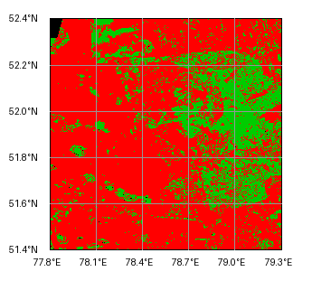
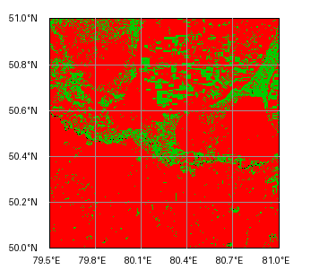

🌲 Мониторинг лесных массивов Казахстана
Справка по картам влажности (NDMI): Данные обновляются раз в сутки со спутников Sentinel-2.
🔴 Красные зоны — критическая сухость хвои (высокий риск верхового пожара).
🟢 Зеленые зоны — нормальный уровень влажности вегетации.
🔥 Оперативные термоаномалии (Спутники VIIRS, обновление каждые 2 часа)
Загрузка данных о точках возгорания...
🛰 Индексы влажности леса (NDMI)
Павлодарская область
Шалдайский бор (Резерват "Ертіс орманы")

Абайская область
Природный резерват "Семей орманы"
